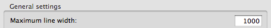

Les ide et la regle des 80 120
[ | August 31, 2011]
Cet article n’a strictement rien à voir avec Pareto. Un peu plus avec un tweet datant de quelques mois.
La longueur maximale des lignes de code est un débat récurrent dans les équipes de développement.
Dès lors que l’on met en place un formatage du code automatique et partagé par tous les développeurs (notamment pour faciliter les diff), l’éternelle question revient :
80 ou 120 ? Robert
Ça fait 5 ans qu’on a tous des 19 pouces, on pourrait peut-être passer à 160 non ? Gérard
Que nenni !¶
Voici la configuration que j’utilise :

Vous avez bien lu, je préfère 1000. Ou 2000. Ou 10000. Ou… bon, je suppose que vous avez compris.
Non pas que j’ai la chance de disposer d’un écran de cinéma pour coder, pour moi il s’agit juste de bonnes pratiques.
Ce n’est pas votre IDE qui doit décider de la longueur de vos lignes de code, c’est vous.
Une ligne de code qui dépasse la largeur de l’écran, c’est un code smell. Laisser l’IDE ajouter des retours à la ligne, c’est cacher le code smell.
Un peu comme mettre du déo sans se doucher après un jogging.
Pour la route, quelques cas classiques de longlignite aigüe :
Le syndrome du développeur C, aka le radin des variables¶
A l’origine, en C, il fallait déclarer toutes les variables locales d’une procédure au début de celle-ci. Ce n’est pas forcément une mauvaise idée.
Mais en combinant cela avec l’idée qu’une variable locale, c’est forcément de la mémoire utilisée en plus et donc de la “performance” en moins, on prend rapidement la bonne habitude de créer le moins de variables locales possibles.
Un exemple de la vraie vie :
WebApplicationContextUtils.getWebApplicationContext(this.getServletContext()).getAutowireCapableBeanFactory().autowireBeanProperties(this, AutowireCapableBeanFactory.AUTOWIRE_BY_TYPE, true);
Vous trouvez-ça lisible vous ?
C’est peut-être super excitant à écrire (ah ça c’est sûr on est fier hein, on a utilisé aucune variable…). Et PAN, +10000€ de dette technique.
La solution est simple, elle s’appelle la variable locale. Découpez votre code, créez des variables locales même si elles ne servent qu’une fois. Et découpez votre code en petites méthodes.
Moins de 5 lignes, c’est bien. Au passage, je vous recommande chaudement la lecture de Clean Code :-).
On comprend déjà mieux :
ServletContext servletContext = this.getServletContext();
WebApplicationContext applicationContext = WebApplicationContextUtils.getWebApplicationContext(servletContext);
AutowireCapableBeanFactory beanFactory = applicationContext.getAutowireCapableBeanFactory();
beanFactory.autowireBeanProperties(this, AutowireCapableBeanFactory.AUTOWIRE_BY_NAME, true);
Le fan de programmation fonctionnelle¶
Le mec, un jour, il a découvert Google Guava et ses Function ; il a trouvé ça trop cool et a adopté le “style fonctionnel” dans tous ses développements. Malheureusement, en Java, cela se traduit par des classes anonymes (à moins d’utiliser FJF… pub ;-)), et cela déborde vite de l’écran !
Encore un exemple de la vraie vie, un peu maquillé et allégé pour l’occasion :
public class MyPanel extends Composite {
public MyPanel() {
final Request request = new Request();
initWidget(new VerticalPanel()
{
add(new HorizontalPanel() {
{
add(new RadioButton("native", "native") {
{
setValue(request.isNativeRequest());
addClickHandler(new ClickHandler() {
public void onClick(ClickEvent event) {
request.setNativeRequest(getValue());
}
});
}
});
}
});
add(new Button("Run", new ClickHandler() {
public void onClick(ClickEvent event) {
ServicesHolder.requestService.execute(request, new AsyncCallback<Response>() {
public void onFailure(Throwable caught) {
Window.alert(caught.getMessage());
}
public void onSuccess(Response response) {
try {
updateUi(response);
} catch (Exception e) {
onFailure(e);
}
}
});
}
}));
}
});
}
}
Quand je tombe sur une classe qui comporte 1000 lignes comme ça, j’ai beaucoup de mal à suivre le flux d’exécution. Pas vous ?
L’utilisation d’une Fluid interface¶
Les Fluid interfaces, par design, sont faites pour permettre les appels chaînés, afin d’augmenter la lisibilité du code et éventuellement créer des DSL.
Si la chaîne d’appels de méthode est courte et a un sens grammatical, il paraît alors sensé de la laisser sur une ligne, sans que l’IDE ne formate cette ligne.
Exemple avec un binding Guice :
Par contre, si la chaîne d’appels est trop longue, à vous de la découper à votre goût sur plusieurs lignes.
Une astuce simple consiste à ajouter “//” en fin de ligne, pour empêcher l’IDE de recoller ensemble des appels de méthodes que l’on a décidé de séparer.
Par exemple, pour utiliser un SharedPreferences helper généré par AndroidAnnotations:
A vous maintenant : qui a d’autres exemples de longlignite aigüe ?
Comments¶
Baztoune¶
Ah, l’éternelle question :D ça me rappelle ce topic sur SO
Dans l’absolu, je suis d’accord, c’est bien au développeur de découper ses lignes, pour donner du rythme à son code et le rendre lisible, mais en équipe, ne vaut-il mieux pas assurer l’uniformisation de l’apparence du code? Pas spécialement pour le gestionnaire de sources qui se débrouille très bien, mais pour la lisibilité globale du code, et ainsi éviter les disparités de style entre développeurs.
Gabriel Kastenbaum¶
J’ai juste une règle, qui diffère un peu de la règle usuelle du nombre de lignes :
une méthode doit être lisible d’un coup d’oeil.
On parle toujours du nombre de lignes par méthode. Il faut aussi parler des lignes trop longues en largeur. C’est aussi fautif amha
Après (cf. exemple de la classe anonyme) java n’aide pas toujours.
Mais l’idée est là. Pour un écran normal, il faut pouvoir tout lire d’un coup.
J’ai déjà galéré sur des méthodes dont le bug se voyait quand on scrollait à droite. Or je ne scrolle JAMAIS à droite. je n’y pense jamais.
C’est pq dans Eclipse je laisse une line width de 120 à peu près.
L’écran est une feuille.
Francois Marot¶
Entierement d’accord avec ce post. Pour moi le formatteur est un mal nécessaire (pour uniformiser tout ce qui est tabulation, espacement, supprimer d’éventuels saut de lignes multiple, et surtout faciliter les diff/merges) mais il doit en faire le strict minimum. Le développeur doit rester au manette, et si ponctuellement on veut pouvoir faire un ligne longue (pour mettre un commentaire sur un truc touchy par exemple), on doit pouvoir le faire. Tant que ca reste de facon exceptionnelle et justifiée. Donc des formatteurs de code, oui, mais de facon minimum.